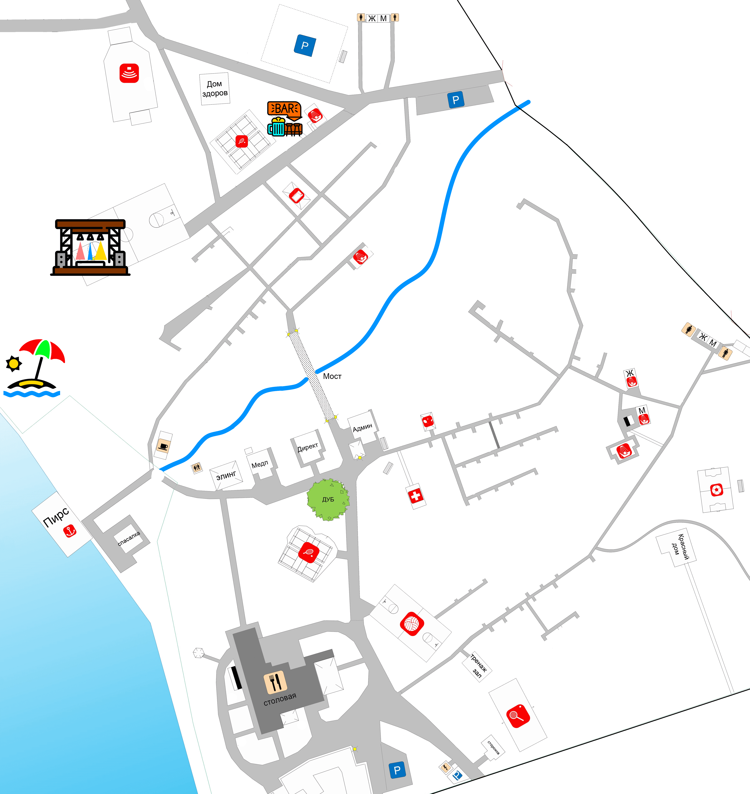

<div class="container-information" >

</div>

<app-map-admin></app-map-admin>

<!--=================================================================================================================-->
<div class="container-map">
  <div class="map">
    
    <app-button-house
      *ngFor="let house of mapService.buttonHouseList"
      [house]="house"
      (onChange)="mapService.selectObjectOnMap($event)"
    ></app-button-house>
    <ng-template #dynamic></ng-template>
  </div>
</div>

